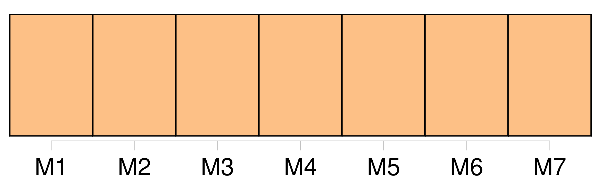
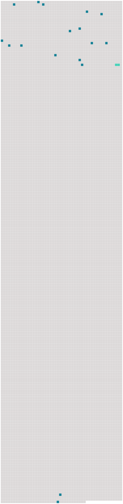

Longueur nb maillons : 18 mentions |
 |
A ce bruit, Marianina, Filippo et madame de Lanty jetèrent les yeux sur [nous] , et leurs regards furent comme des éclairs. [2 phrases] Hommes et femmes, tout le monde [nous] fit place. Parvenus au fond des appartements de réception, [nous] entrâmes dans un petit cabinet demi-circulaire. [14 phrases] [Nous] restâmes pendant un moment dans la contemplation de cette merveille, qui semblait due à quelque pinceau surnaturel. [1 phrases]
La lampe suspendue au milieu du boudoir, et contenue dans un vase d’ albâtre, illuminait alors cette toile d’ une lueur douce qui [nous] permit de saisir toutes les beautés de la peinture. [19 phrases] [Nous] vîmes entrer la jeune Marianina, plus brillante encore par son expression d’ innocence que par sa grâce et par sa fraîche toilette ; elle marchait alors lentement, et tenait avec un soin maternel, avec une filiale sollicitude, le spectre habillé qui [nous] avait fait fuir du salon de musique ; elle le conduisit en le regardant avec une espèce d’ inquiétude posant lentement ses pieds débiles. [8 phrases] [Nous] entendîmes alors, grâce à un profond silence, le soupir lourd qui sortit de sa poitrine : il tira la plus belle des bagues dont ses doigts de squelette étaient chargés, et la plaça dans le sein de Marianina. [1 phrases]
Elle [nous] aperçut. [1 phrases] [vous] étiez là!! [1 phrases]
Après [nous] avoir regardés comme pour [nous] interroger, elle courut à son danseur avec l’ insouciante pétulance de son âge. [13 phrases]
Au moins est -il vrai que vous aimez à entendre raconter l’ histoire de ces passions énergiques enfantées dans [nos] cœurs par les ravissantes femmes du Midi? [9 phrases] Elle sourit, et [nous] nous séparâmes ; elle toujours aussi fière, aussi rude, et moi toujours aussi ridicule en ce moment que toujours. [5 phrases] Le lendemain, [nous] étions devant un bon feu, dans un petit salon élégant, assis [tous deux] ; elle sur une causeuse ; moi, sur des coussins, presque à ses pieds, et mon œil sous le sien. [455 phrases]
— Mais, me dit madame de Rochefide, quel rapport existe-t -il entre cette histoire et le petit vieillard que [nous] avons vu chez les Lanty? [8 phrases]
[Nous] restâmes pendant un moment plongés dans le plus profond silence. |
 |
Il est possible de télécharger la ressource sur la page Ortolang |
Si vous avez des questions ou vous voyez des erreurs, merci d'envoyer un mail à silvia.federzoni89@gmail.com |